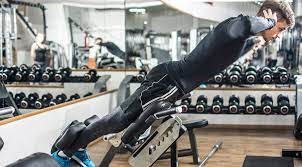

Machine Pump Back Workout
Lat pull-down is a great exercise for targeting the latissimus dorsi muscle in the back. To perform this exercise, sit at a lat pull-down machine and grab the bar with an overhand grip. Pull the bar down towards your chest, keeping your elbows close to your body, and then slowly release it back up to the starting position.
Deadlifts
Deadlifts are a compound exercise that targets multiple muscles, including the lower back. Stand with your feet hip-width apart and a barbell in front of you. Bend at your hips and knees to lower your body and grasp the bar with an overhand grip. Lift the bar by extending your hips and standing up straight. Lower it back to the ground with control.
Bent-Over Row

Bent-over row is an effective exercise for targeting the muscles in the upper and middle back, as well as the rear shoulders and biceps. To perform this exercise, stand with your feet shoulder-width apart and hold a barbell with an overhand grip. Bend forward at the waist and lower the barbell towards the ground, keeping your back straight. Pull the barbell up towards your chest, squeezing your shoulder blades together, and then lower it back down to the starting position.
Pull-Up

Pull-ups are an excellent bodyweight exercise for strengthening the muscles in the back, arms, and shoulders. To perform a pull-up, grab a pull-up bar with an overhand grip and hang from the bar. Pull yourself up towards the bar until your chin is above the bar, and then lower yourself back down to the starting position.
T-Bar Row
T-bar row is a great exercise for targeting the muscles in the upper back, rear shoulders, and biceps. To perform this exercise, stand with your feet shoulder-width apart and hold the bar with an underhand grip. Bend forward at the waist and lower the bar towards the ground. Pull the bar up towards your chest, squeezing your shoulder blades together, and then lower it back down to the starting position.
Seated Row
Seated row is an effective exercise for targeting the muscles in the upper and middle back, as well as the rear shoulders and biceps. To perform this exercise, sit at a cable row machine with your feet on the footrests and grab the handles with an overhand grip. Pull the handles towards your chest, squeezing your shoulder blades together, and then slowly release them back to the starting position.
Lat Pull-Down
Lat pull-down is a great exercise for targeting the latissimus dorsi muscle in the back. To perform this exercise, sit at a lat pull-down machine and grab the bar with an overhand grip. Pull the bar down towards your chest, keeping your elbows close to your body, and then slowly release it back up to the starting position.
Lower Back

To strengthen your lower back, you can perform exercises like hyperextensions or supermans. Lie face down on the floor, and either lift your upper body and legs off the ground simultaneously (supermans) or just your upper body (hyperextensions). Hold for a moment, then lower back down.